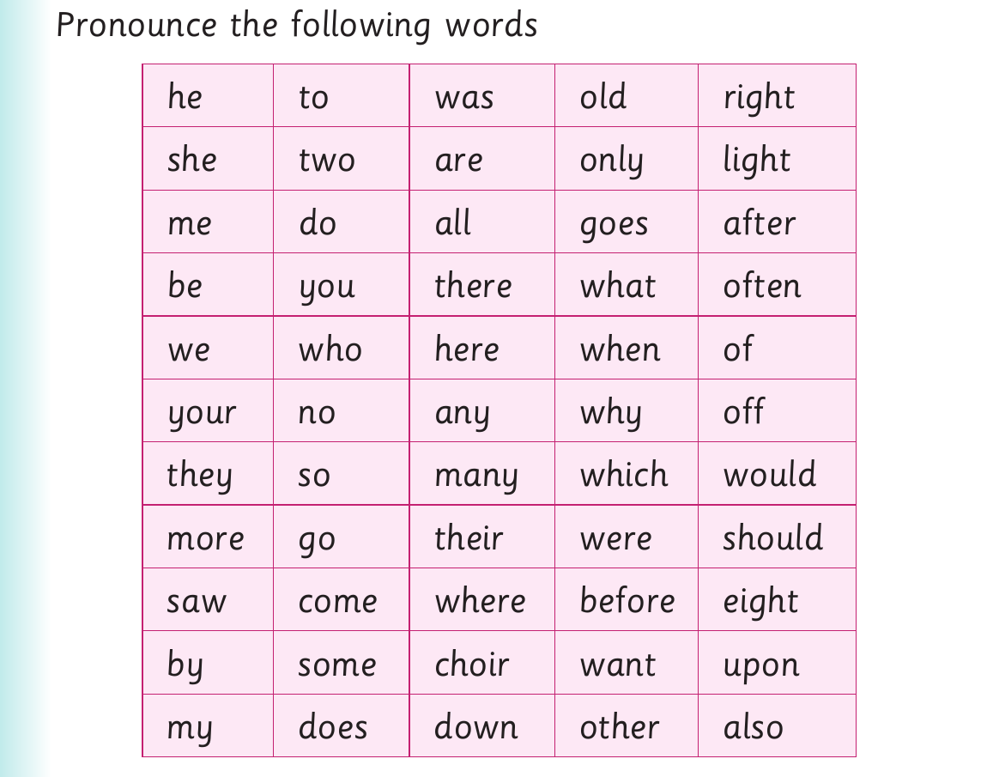

Pronouncing English sounds - continued
(b) The shirt does not fit him. (c) This gel can make the skin soft. (d) The girl does not like jam. (e) I can read that passage in a minute. (f) Red ripe mangoes are sweet. (g) I am not a small kid. (h) Their cat sleeps in a bed.
Activity 3

Pronounce the following words he to was old right she two are only light me do all goes after be you there what often we who here when of your no any why off they so many which would more go their were should saw come where before eight by some choir want upon my does down other also